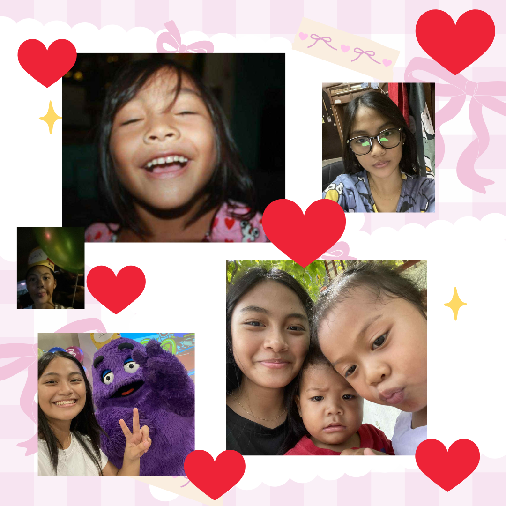
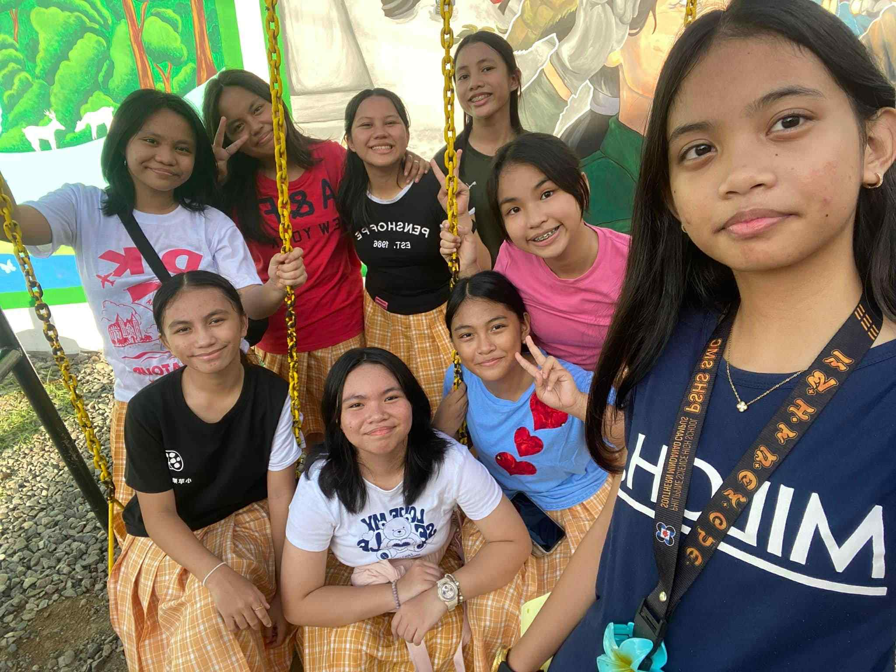
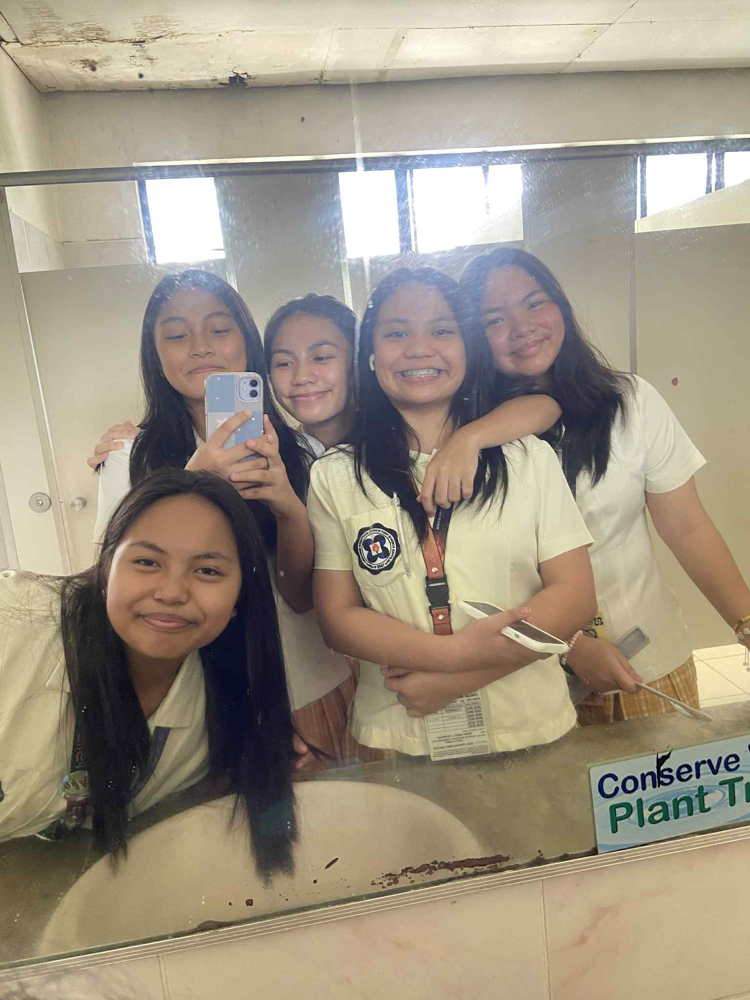
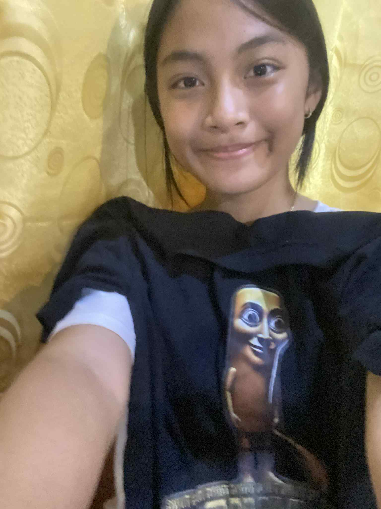
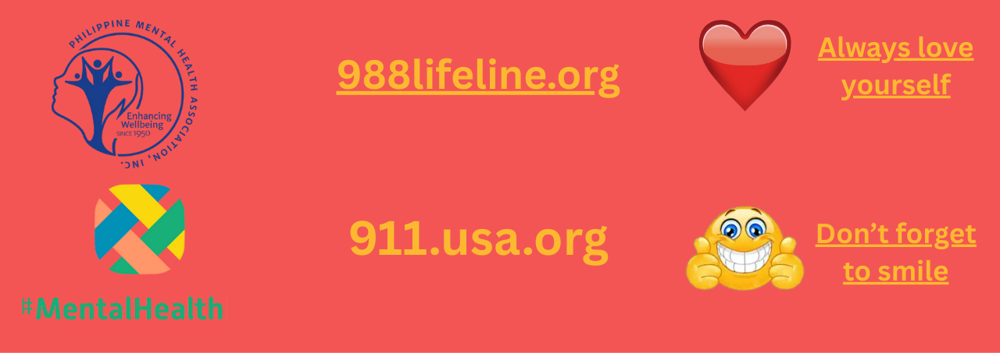

Who Is This?:
Facts About Her:
- My favourite food is fruit, and my favourite drink is strawberry latte
- Love knowing more about myself and others, making myself and others happy, and loving and taking care of myself!
- Graduated valedictorian in Harvard University as Psychology as my course
- Joined a lot of organizations and movements for mental health
- In a darkened world, I want to uncover that light for everyone.
I am Zyanna Gail P. Deguito, the founder of Happy Heart, Happy Life, and a person with a goal in mind. Ever since when I was little, I always had that empathy and sympathy for the people around me. Though my life at home is chaotic, I will always not let that define who I am and drag me down.
How Did It All Start?:

In the world full of sorrow and worries is a world that needs love, care, hope, and understanding. I grew up in a household where putting importance on mental health is considered overreacting. Whenever I would speak up about my feelings and worries, they would say “Napaka-OA mo naman. Naghahanap ka lang ng palusot.” or “Hoy, sabay-sabay ka masyado ng trend ng world.”, and they would make it worse by insulting me with hurtful words. Growing up in a household where I can’t let out what I feel feels suffocating and… depressing. But, I did not let that stop me, and instead, I wanted to fight for what is right, for what we need since the day we were born, especially after knowing that what I experienced, others also experienced.
 At school, I joined—out of the blue-a friend group that was very toxic and neglectful. At first, I really didn’t think much about their corrupted attitude and mindset, but subsequently there were signs of trauma and bad experiences. Instead of thinking bad and focusing on the toxicness about them, I dug deeper on “why”? After time, I realized that they were just broken souls, a kettle that needed that heat and pressure inside of them to stop.

One day, I made a way for us to open up, and indeed I was right, they just needed that love and care they needed. From months of unhealthy words and actions, to eventually warming up to each other, having that sense of purpose and goal in mind to be healthy and open, and also help those who were like us before. For that, we named our friend group, Skibigoals, skibidi from our favourite word that makes us motivated and happy, and goals as we have goals in mind everyday. After that, our friend group eventually became an advocacy group trying to let people know that their feelings are valid, how they should think healthy, and how they deserve love and care, too, regardless what gender, age, or status they have.
Recommendations:
Organizations:
Where to Ask Help:
Reminders:
Here are links to organizations and local help services in the Philippines that I recommend. They can really help and guide us towards a healthier mental health. Always remember that you are worthy and amazing!